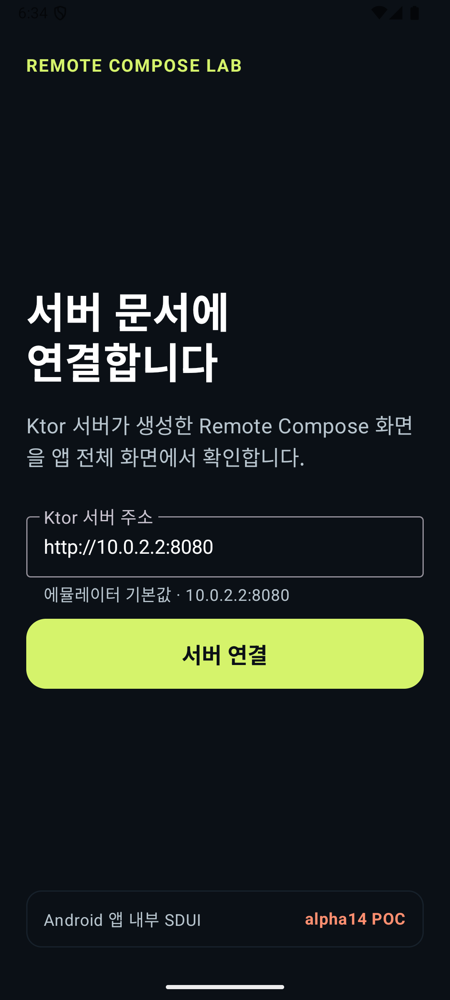
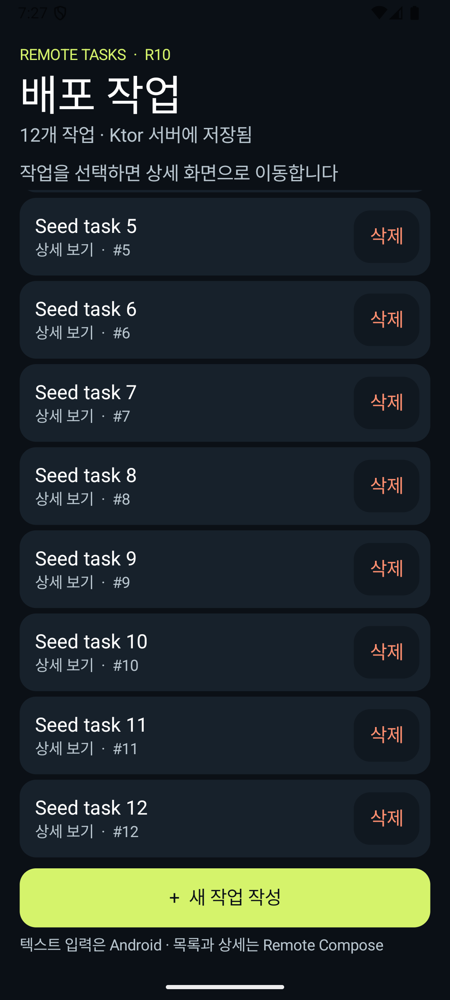
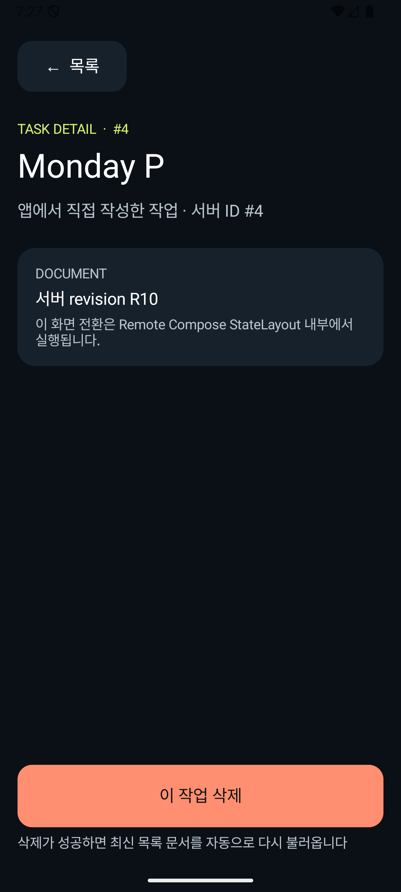

1 · 시작하기
먼저, 완성될 화면부터 봅니다
서버에 저장된 작업 목록을 Android 앱이 받아서 그리고, 목록에서 상세 화면으로 이동하고, 새 작업을 직접 입력해 추가하는 POC를 따라갑니다.
Android 기초만 필요SDUI 사전 지식 불필요Google 공식 Codelab 아님
우리가 만들 흐름



지금은 이것만 기억하세요
Remote Compose는 서버가 보낸 UI 문서를 Android 앱 안에서 화면으로 그리는 기술입니다.
서버가 Android 앱 전체를 보내는 것도, Kotlin 소스 코드를 실행시키는 것도 아닙니다.
i
이 코드랩의 한 가지 경로
Ktor/JVM → RcScope → ByteArray → Android Player만 따라갑니다. @RemoteComposable, RemoteText, .rs/.rb를 사용하는 Android Compose 생성 경로는 다른 제작 방식이므로 마지막 심화 자료로 분리합니다.